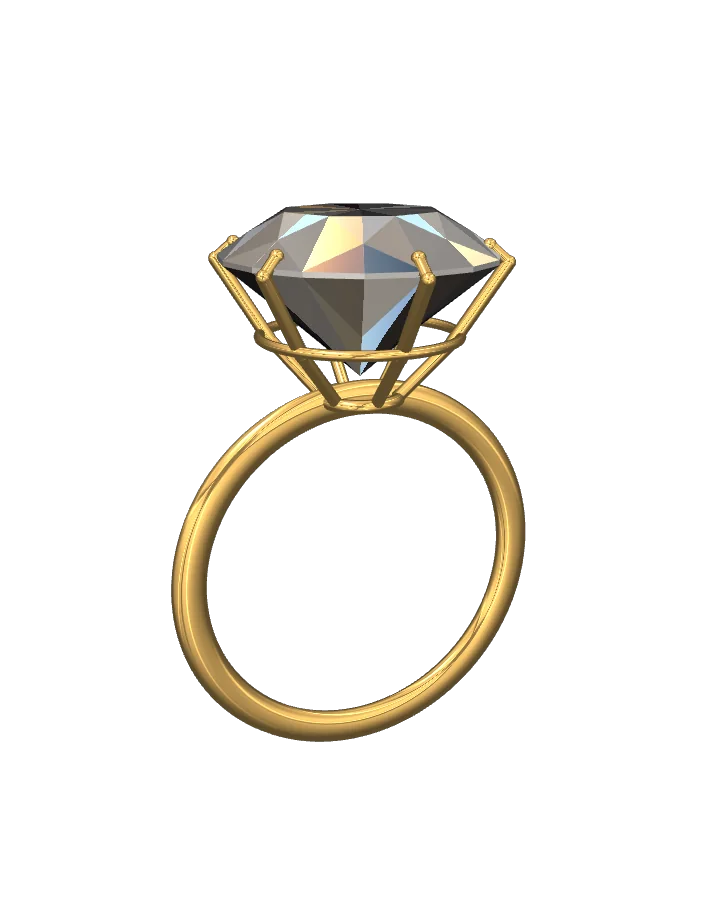
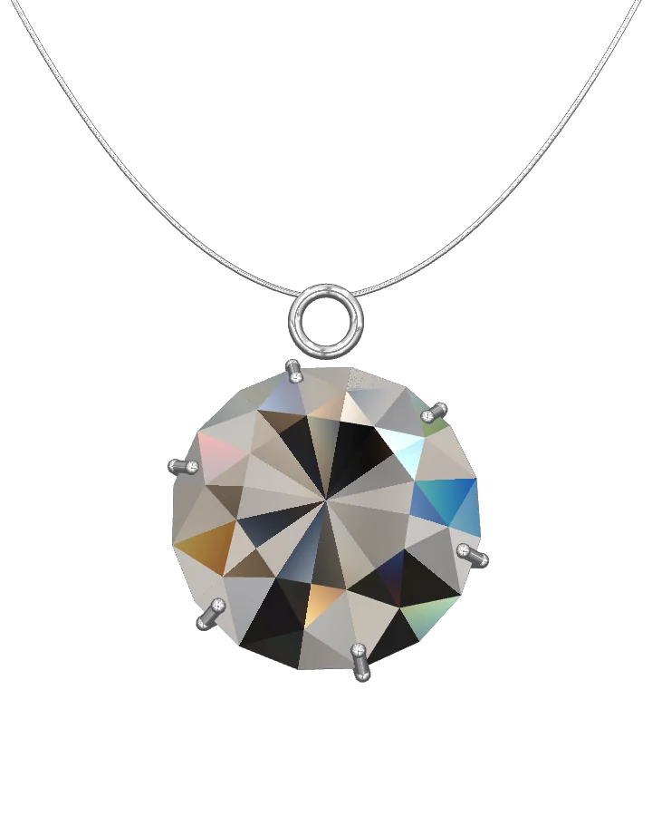
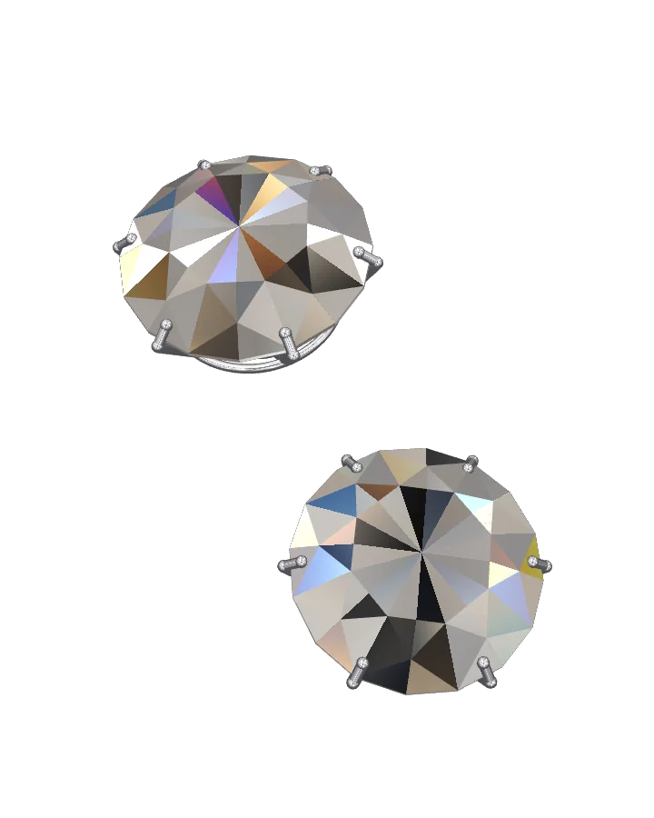

Aukštoji juvelyrika · Šviesos kirtis

Šviesa, kuri
randa kelią.
Atrasti kolekcijąStatinis akmens vaizdas.
Kolekcija
Trys kūriniai,
viena šviesos linija.
Kiekvienas kūrinys sukurtas aplink vieną akmenį. Metalas lieka plonas, kad šviesai liktų vietos.

01 / Žiedas
Aušra
Briliantas 1,0 ct · geltonasis auksas
Peržiūrėti kūrinį
02 / Pakabukas
Rasa
Briliantas 0,8 ct · baltasis auksas
Pristatomas vizito metu

03 / Auskarai
Žara
Du briliantai po 0,5 ct · platina
Pristatomi vizito metu
Amatas
Penkiasdešimt septynios plokštumos.
Šviesa įeina pro aikštelę, atsimuša nuo paviljono ir grįžta pro karūną. Kampas, nukrypęs vos laipsniu, šią kelionę sutrumpina.
57briaunos viename akmenyje
- 01
Atranka
Akmuo vertinamas dienos šviesoje, dar prieš matuojant.
- 02
Kirtimas
Karūna ir paviljonas derinami tarpusavyje, ne atskirai.
- 03
Įtvirtinimas
Šeši nagai laiko akmenį ir beveik neuždengia rundos.
- 04
Poliravimas
Paskutinis žingsnis grąžina metalui ramų, ne veidrodinį blizgesį.
Paslaugos
Sprendimas priimamas ramiai.
Konsultantas, personalizavimas ir priežiūra yra viena paslauga. Visos trys prasideda nuo vizito.
- I
Asmeninis konsultantas
Vienas žmogus nuo pirmo vizito iki atsiėmimo. Jis paruošia kūrinius dar prieš jums atvykstant.
- II
Personalizavimas
Metalas, akmens dydis ir trumpas graviravimas vidinėje žiedo pusėje. Peržiūrą matote iš karto.
- III
Priežiūra
Valymas, nagų patikra ir poliravimas. Kartą per metus akmuo grįžta pas meistrą.
Vizitas
Apžiūra pas konsultantą.
Keturiasdešimt penkios minutės, vienas konsultantas ir tik tie kūriniai, kuriuos norite pamatyti.